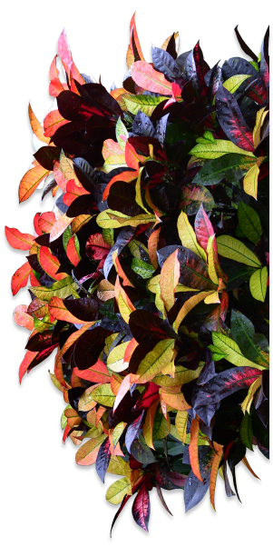
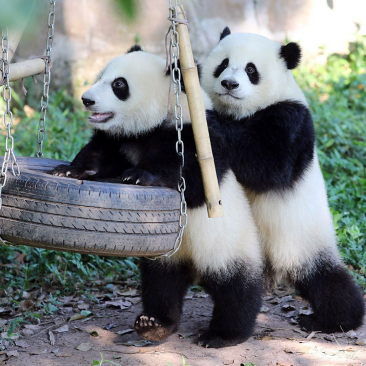
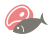
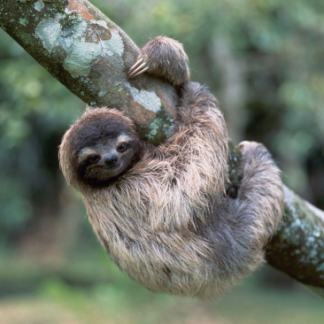

The Backstage of the Wilderness World.
The site was founded on the basis of a volunteer movement to protect and care for animals.
How it works
The main goal is to help the animals, as well as the nature reserves and zoos where they are kept. We are currently working on video projects targeting pandas in China, eagles on an island near Los Angeles, alligators in Florida and gorillas in the Congo. These have a total of more than 1,500 mammals and reptiles.


giant Pandas
Native to Southwest China

Eagles
Native to South America


Gorillas
Native to Congo

Two-toed Sloth
Mesoamerica, South America

cheetahs
Native to Africa

Penguins
Native to Antarctica